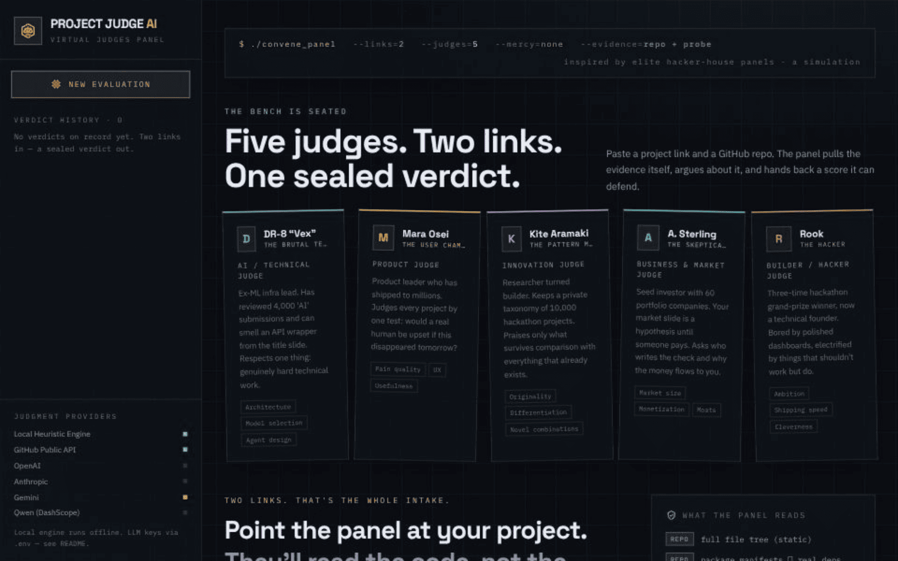
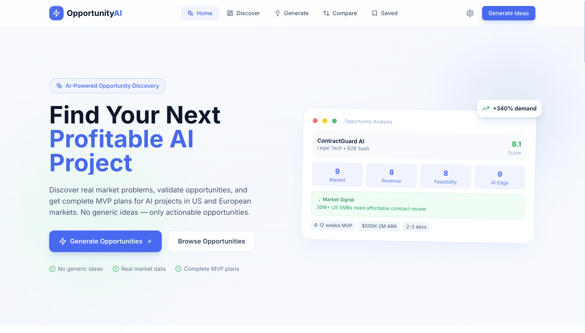
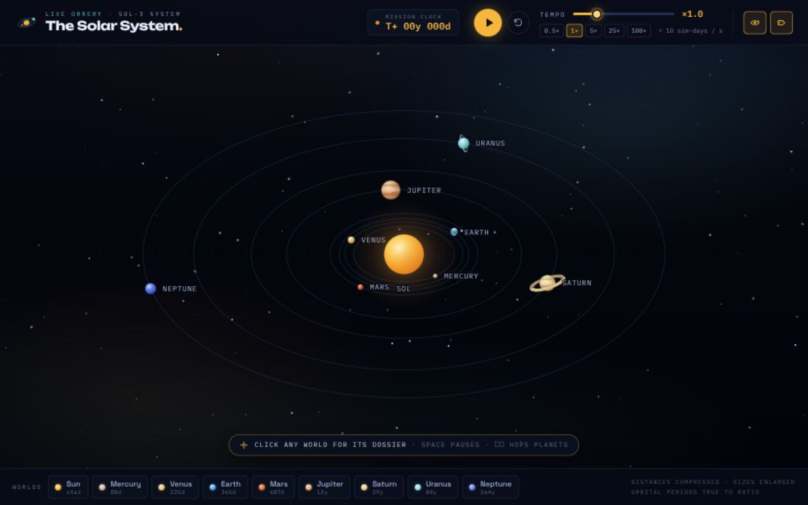
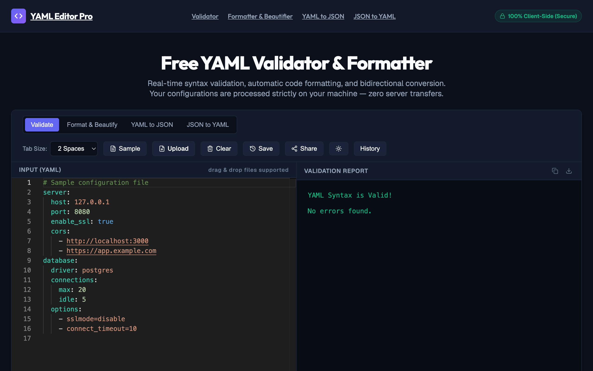
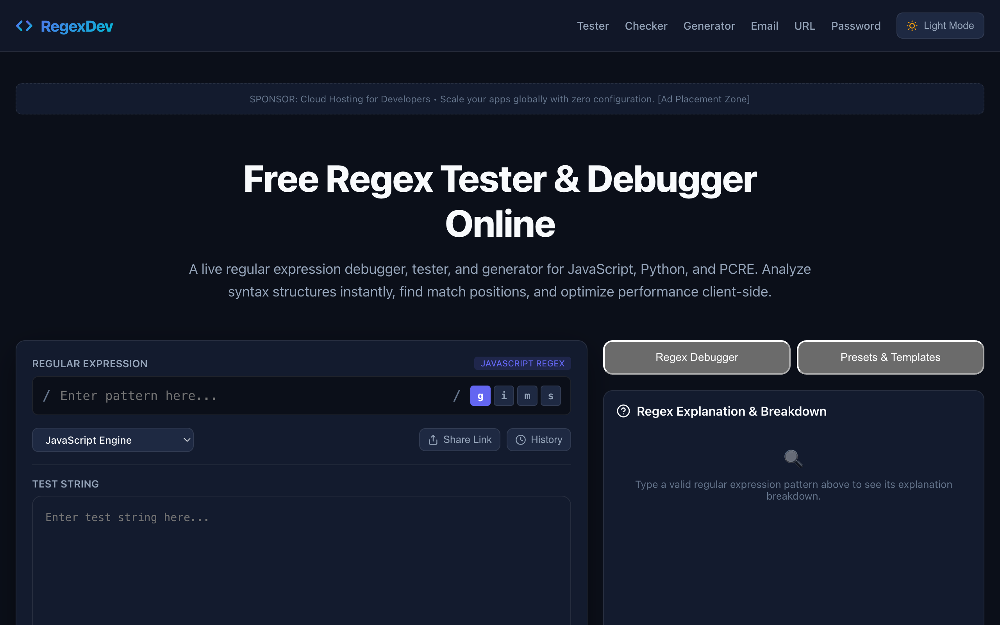
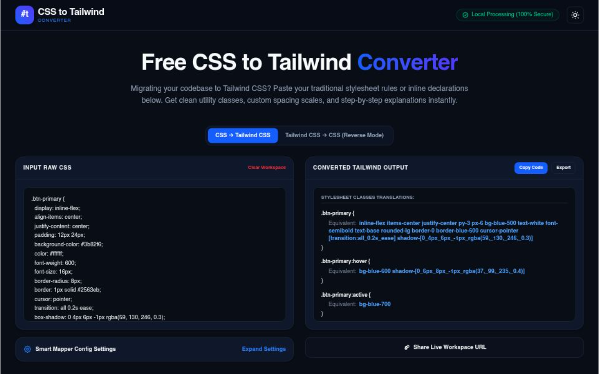
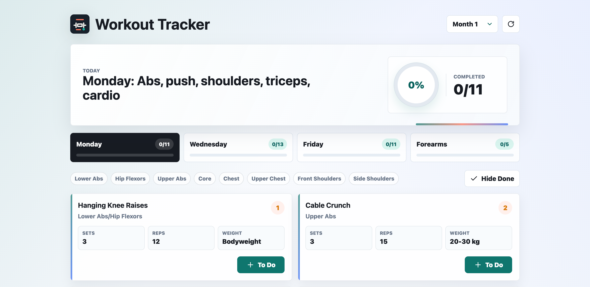

INITIALIZE DEMO ↗HH Judge AI
An AI-powered multi-agent evaluation system that judges projects the way an expert panel at an elite hacker house would — from just two links: your live demo and your public GitHub repo.
Architecting state-of-the-art AI systems, multi-agent evaluation frameworks, and high-performance immersive web applications designed for the next frontier of intelligence.
Production-grade autonomous agents, real-time developer suites, and cutting-edge 3D simulations.

INITIALIZE DEMO ↗An AI-powered multi-agent evaluation system that judges projects the way an expert panel at an elite hacker house would — from just two links: your live demo and your public GitHub repo.

INITIALIZE DEMO ↗Discover profitable AI project opportunities for US and European markets. Real market analysis, MVP planning, and validation strategies — no generic ideas, only actionable opportunities.

INITIALIZE DEMO ↗Experience our solar system like never before with this immersive, browser-based 3D simulation. Built with Vite, it features realistic planetary motion, detailed textures, and intuitive controls to explore the cosmos from your desktop.
A comprehensive JSON utility suite featuring formatting, validation, minification, and conversion tools (XML, CSV, YAML). Includes a tree viewer, editor, and file handling capabilities.
A production-ready, single-page Instant QR Code Generator. Features real-time generation, high-res PNG downloads, and a sleek dark-mode UI powered by node-qrcode.

INITIALIZE DEMO ↗A real-time YAML syntax validator, formatter, and bidirectional converter. Features secure, local client-side processing, syntax validation reports, and a clean developer UI.

INITIALIZE DEMO ↗A live regular expression tester, debugger, and generator tool. Features real-time syntax highlighting, a visual AST explanation tree, and client-side execution supporting multiple dialects.
An AI-powered SQL performance analyzer and optimization tool. Features index recommendations, query execution plan insights, and anti-pattern detection for PostgreSQL, MySQL, SQL Server, and SQLite.

INITIALIZE DEMO ↗An instant CSS to Tailwind CSS utility class converter. Features bidirectional conversion (including reverse Tailwind-to-CSS), local secure processing, smart mapper configurations, and custom spacing/color matching.

INITIALIZE DEMO ↗A comprehensive, modern fitness management platform designed to help users track complex, multi-day training regimens. Featuring an intuitive dashboard with progress visualization, the application allows for granular logging of sets, repetitions, and weight across specific muscle groups.
Interested in collaborating on frontier AI architectures, multi-agent frameworks, or production systems? Establish an encrypted uplink.